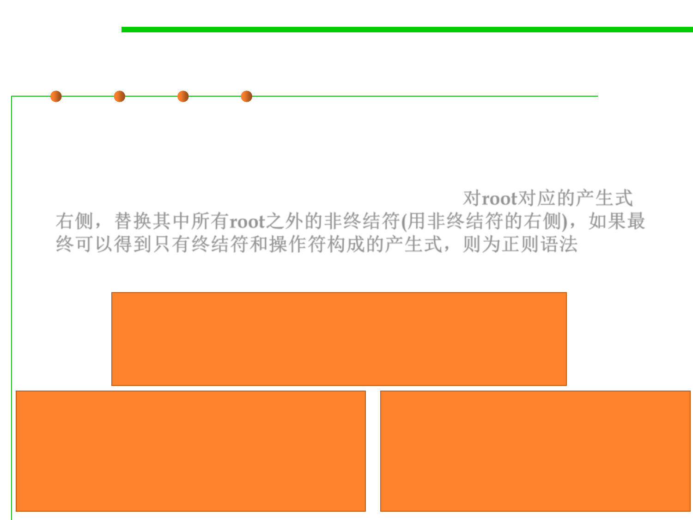

Regular grammar
6.3 Maintainability-Oriented Construction Techniques
▪ A regular grammar正则文法 has a special property: by substituting
every nonterminal (except the root one) with its righthand side, you
can reduce it down to a single production for the root, with only
terminals and operators on the right-hand side. 对root对应的产生式
右侧，替换其中所有root之外的非终结符(用非终结符的右侧)，如果最
终可以得到只有终结符和操作符构成的产生式，则为正则语法
▪ Which of them are regular grammars?
url ::= 'http://' hostname (':' port)? '/'
hostname ::= word '.' hostname | word '.' word
port ::= [0-9]+
word ::= [a-z]+
markdown ::= ( normal | italic ) *
italic ::= '_' normal '_'
normal ::= text
text ::= [^_]*
html ::= ( normal | italic ) *
italic ::= '<i>' html '</i>'
normal ::= text
text ::= [^<>]*